Differential Expression Analysis
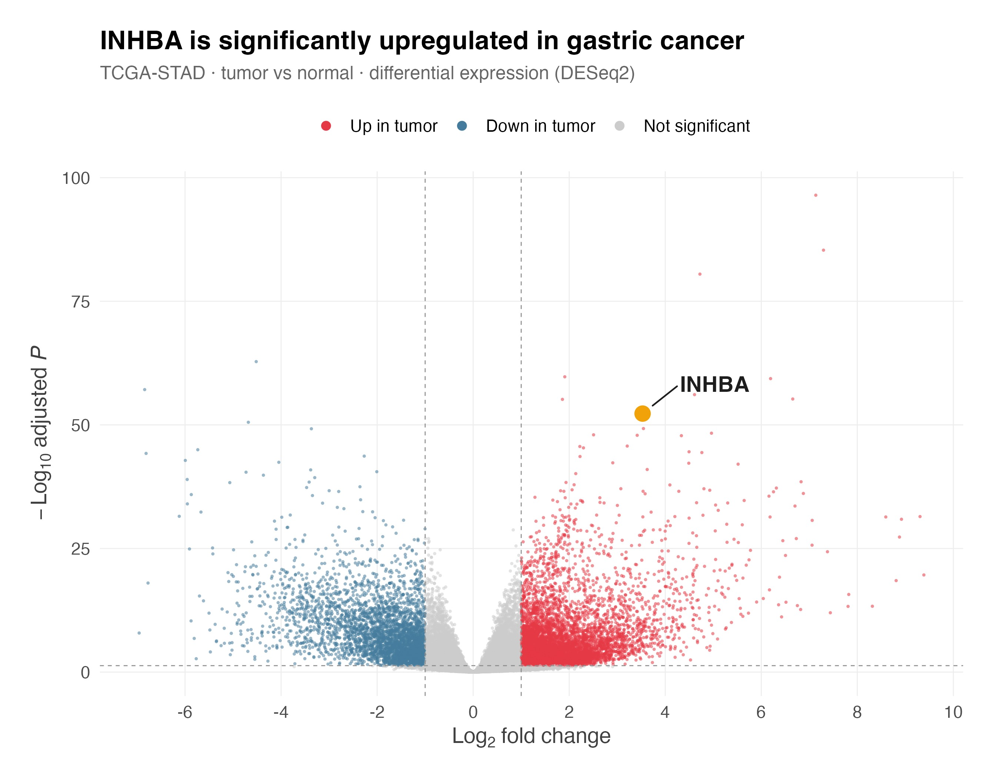
DESeq2 Wald test: −log₁₀(padj) vs. log₂ fold-change (tumor / normal), TCGA-STAD. INHBA (log₂FC ≈ 3.5, −log₁₀ padj ≈ 52) is among the most significantly upregulated genes in the cohort.
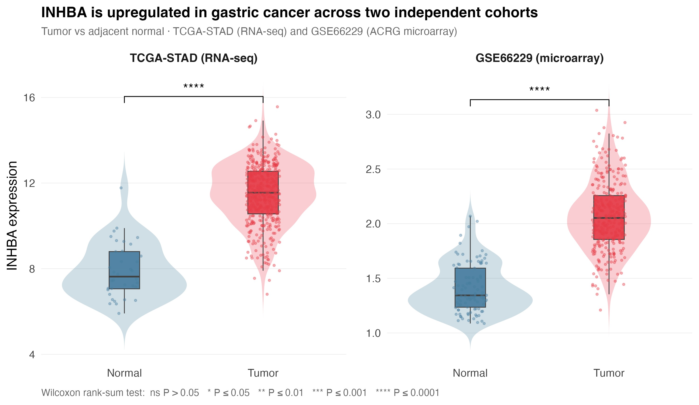
Tumor vs. adjacent normal INHBA expression in TCGA-STAD (RNA-seq) and GSE66229 (ACRG microarray). Wilcoxon rank-sum test, p < 0.0001 in both cohorts, confirming the upregulation is not cohort- or platform-specific.
INHBA (activin A subunit) is one of the most significantly upregulated genes in gastric tumor tissue (log₂FC ≈ 3.5, −log₁₀ padj ≈ 52, DESeq2), and this upregulation replicates independently in the GSE66229 ACRG microarray cohort (Wilcoxon rank-sum p < 0.0001), confirming the signal is not an artifact of sequencing platform or cohort composition. As a TGF-β superfamily ligand implicated in stromal remodeling, INHBA's strong and reproducible upregulation nominates it as a candidate driver of gastric tumor progression rather than a passenger transcriptional change.
Survival Analysis — Kaplan-Meier
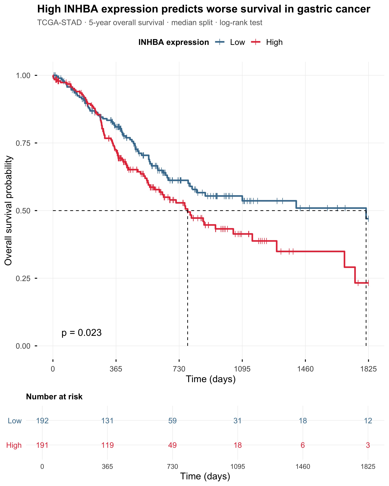
5-year overall survival, TCGA-STAD, median-split groups (n=192 low, n=191 high). High INHBA expression predicts worse survival, log-rank p = 0.023.
Patients with high INHBA expression (median-split, n=191) show significantly worse 5-year overall survival than the INHBA-low group (n=192; log-rank p = 0.023), with the survival curves separating early and the high-expression group's median survival reached by ~2 years, roughly a year before the low-expression group's. This positions INHBA as a candidate prognostic biomarker; multivariate Cox modeling adjusted for AJCC stage, age, and molecular subtype is the next step to confirm independence from known clinical covariates. The pathway co-expression analysis below (Module 3) offers a candidate mechanism: INHBA marks an invasive, stromal phenotype anti-correlated with tumor proliferation programs.
Pathway Enrichment — GSEA
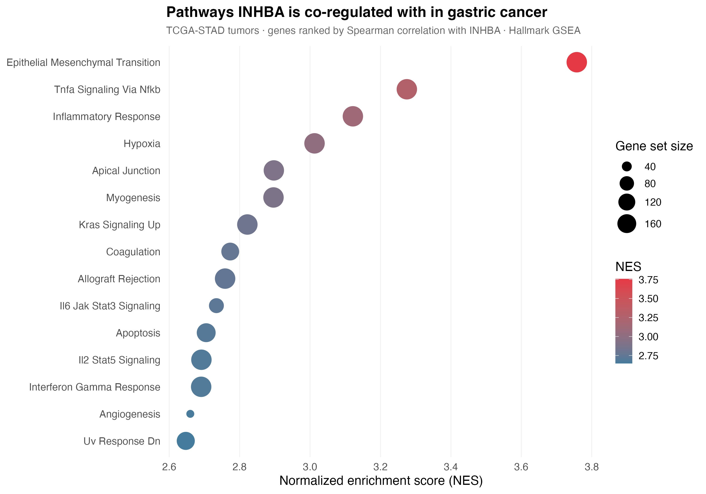
Hallmark GSEA on genes ranked by Spearman correlation with INHBA among tumor samples (not a tumor-vs-normal contrast), TCGA-STAD. Epithelial-mesenchymal transition, TNFα/NF-κB signaling, and inflammatory response show the strongest co-enrichment (dot size: gene set size; color: NES).
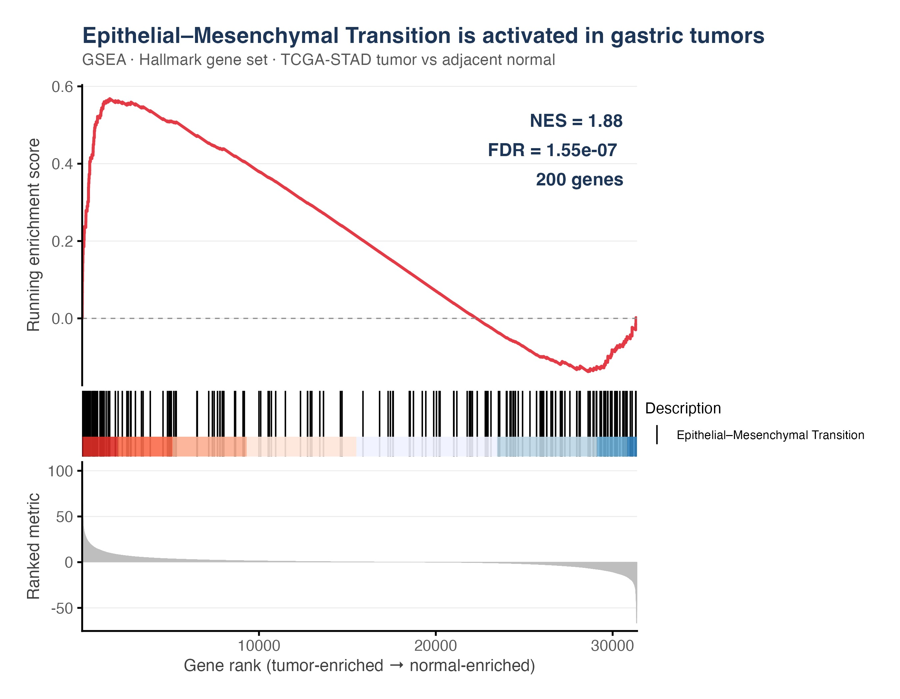
Running enrichment curve for HALLMARK_EPITHELIAL_MESENCHYMAL_TRANSITION, with genes ranked by sign(log₂FC) × −log₁₀(p) from the tumor-vs-adjacent-normal DESeq2 contrast (NES = 1.88, FDR = 1.55 × 10⁻⁷, 200 genes). The early positive peak at the tumor-enriched end confirms EMT is significantly activated in gastric tumors — the program INHBA most strongly co-varies with.
| Gene Set | NES | FDR | Correlation |
|---|---|---|---|
| HALLMARK_EPITHELIAL_MESENCHYMAL_TRANSITION | +3.76 | < 0.0001 | UP |
| HALLMARK_TNFA_SIGNALING_VIA_NFKB | +3.27 | < 0.0001 | UP |
| HALLMARK_INFLAMMATORY_RESPONSE | +3.12 | < 0.0001 | UP |
| HALLMARK_HYPOXIA | +3.01 | < 0.0001 | UP |
| HALLMARK_ANGIOGENESIS | +2.66 | < 0.0001 | UP |
| HALLMARK_E2F_TARGETS | −2.62 | < 0.0001 | DOWN |
| HALLMARK_OXIDATIVE_PHOSPHORYLATION | −2.39 | < 0.0001 | DOWN |
| HALLMARK_G2M_CHECKPOINT | −2.35 | < 0.0001 | DOWN |
| HALLMARK_MYC_TARGETS_V1 | −2.16 | < 0.0001 | DOWN |
Epithelial–mesenchymal transition (EMT) is the through-line of this analysis, and it converges on INHBA from two independent directions. First, ranking genes by the tumor-vs-adjacent-normal contrast (Module 1's axis) shows the Hallmark EMT program is significantly activated in gastric tumors (GSEA NES = 1.88, FDR = 1.55 × 10⁻⁷; curve at right). Second, ranking genes by their correlation with INHBA within tumors shows EMT is also the program INHBA most strongly co-varies with (NES = 3.76). A canonical EMT ligand is thus both up in tumors and the single best marker of the invasive transcriptional state.
The full INHBA co-expression scan (43 significant sets, FDR < 0.05) fills in the surrounding phenotype: alongside EMT, INHBA is positively co-regulated with TNFα signaling via NF-κB, inflammatory response, and hypoxia — an invasive, inflamed, hypoxic, stromal signature — and most negatively correlated with proliferative and metabolic programs: E2F targets (NES = −2.62), oxidative phosphorylation, G2M checkpoint, and MYC targets.
This split is expected, not contradictory. Tumors broadly occupy either a highly proliferative state (MYC/E2F-driven cell cycle, OxPhos-fueled biosynthesis) or a migratory, invasive state — the "grow or go" trade-off — and INHBA marks the latter. It's also mechanistically consistent with activin/TGF-β–SMAD2/3 signaling, which is classically cytostatic (inducing p21/p15, repressing MYC) while driving EMT and stromal remodeling. Bulk-tissue composition likely reinforces the signal too: INHBA-high tumors tend to be more stroma- and immune-infiltrated, diluting the epithelial proliferation/OxPhos signal at lower tumor purity. Together, INHBA tags an invasive, hypoxic, stromal phenotype anti-correlated with tumor-cell proliferation — plausibly the same phenotype driving the worse survival seen in the Kaplan-Meier analysis above.
Gene Regulatory Network — Gastric Cancer
Click any gene to explore its connections · Drag to rotate
Single-Cell Transcriptomic Landscape
3D UMAP projection of gastric cancer scRNA-seq data. Colors reflect biological compartment hierarchy — click legend entries to isolate populations, switch views to explore immune vs. epithelial vs. stromal structure.
Drag to rotate · Right-drag to pan · Click legend items to toggle populations
scRNA-seq Atlas & TME Composition
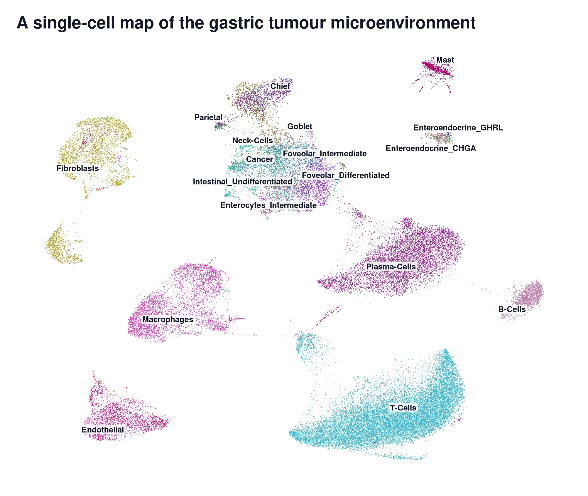
Harmony-integrated UMAP of 147,181 cells from 27 donors, annotated into 25 cell types spanning the epithelial, immune and stromal compartments. Colours are the same hexes used by the interactive 3D UMAP above, so the two views can be read against each other.
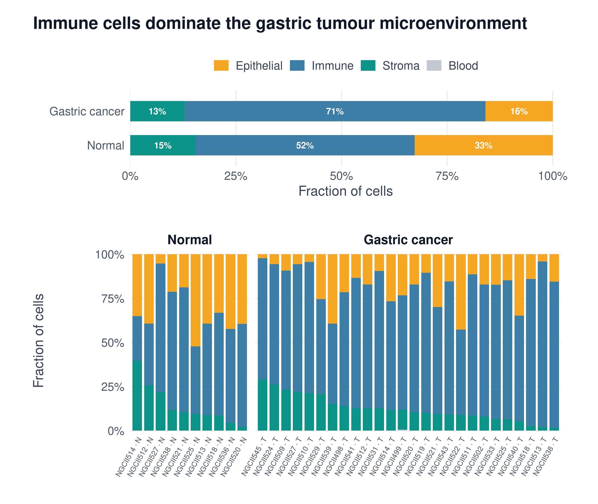
Compartment fractions per sample (T = tumour, N = normal). Pooled across cells, the immune fraction rises from 52% to 71% while resident epithelium falls from 33% to 16%; the stromal fraction is essentially unchanged (15% → 13%).
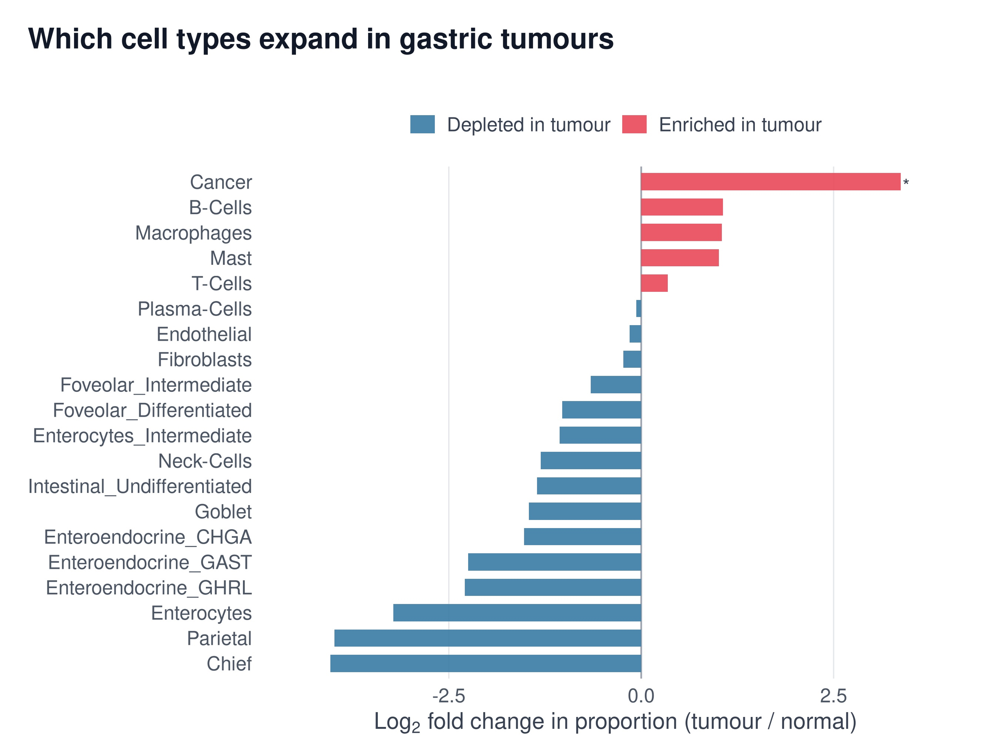
Log₂ fold change in sample-level cell-type proportion, tumour vs. normal (Wilcoxon rank-sum, BH-adjusted). The malignant compartment expands ~10-fold (log₂FC = +3.37, FDR = 0.013); differentiated gastric lineages — chief, parietal, enteroendocrine — are progressively lost.
The gastric tumour microenvironment is immune-dominated and epithelium-depleted: immune cells make up 71% of tumour cells versus 52% of normal, while normal gastric epithelium falls from 33% to 16% as differentiated lineages (chief, parietal, enteroendocrine) are replaced by a malignant compartment that is the only population to clear FDR < 0.05 (log₂FC = +3.37). With 26 tumour and 10 normal samples the proportion test is underpowered for the smaller populations, so the remaining ranking should be read as descriptive. Note also that the stromal fraction barely moves (15% → 13%) — which matters for the section below, because the INHBA signal turns out to be a change in what stromal cells do, not how many of them there are.
Target Biology — Which Cells Make INHBA
Bulk RNA-seq showed INHBA is up in tumour tissue and predicts worse survival, but a bulk sample averages every cell in it. Single-cell resolution answers the question bulk cannot: which cell type actually transcribes the gene, and which cells can receive its signal.
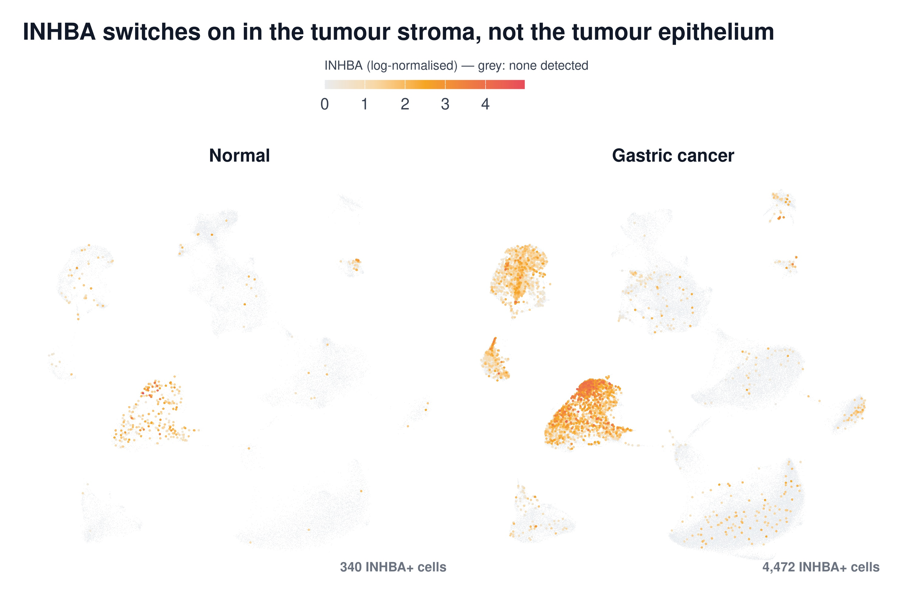
4,472 of 116,284 tumour cells carry an INHBA transcript (3.9%) versus 340 of 30,897 normal cells (1.1%). The signal is spatially concentrated: it lights up the fibroblast and macrophage islands, and leaves the malignant epithelial cluster essentially dark.
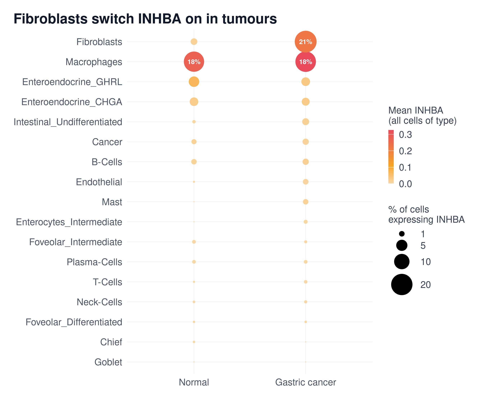
Dot size = fraction of cells with ≥1 INHBA transcript; colour = mean log-normalised expression. Fibroblasts go from 1.5% positive in normal tissue to 21.0% in tumour. Macrophages sit at ~18% in both tissues — a constitutive, not a tumour-induced, source.
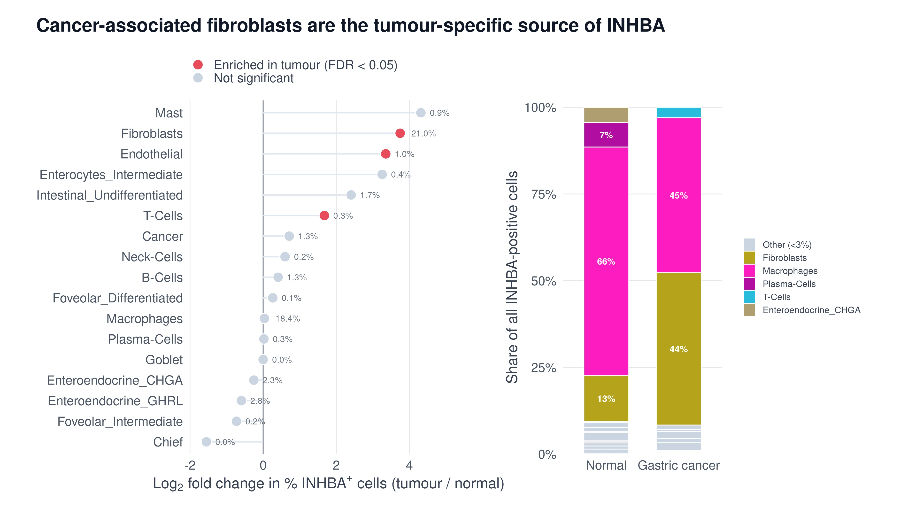
Fibroblasts are the only large population with a tumour-specific induction (13.4×, Fisher exact FDR = 4.7 × 10⁻¹⁹¹); endothelium (10.2×, FDR = 2.9 × 10⁻⁵) and T cells (3.2×, FDR = 3.8 × 10⁻⁴) follow. Fibroblasts rise from 13% to 44% of all INHBA⁺ cells. Malignant cells are not a source (0.8% → 1.3%, n.s.).
| Cell Type | % INHBA⁺ Normal | % INHBA⁺ Tumour | Fold | FDR | Role |
|---|---|---|---|---|---|
| Fibroblasts | 1.52% | 20.97% | 13.4× | 4.7 × 10⁻¹⁹¹ | TUMOUR-INDUCED |
| Endothelial | 0.06% | 1.03% | 10.2× | 2.9 × 10⁻⁵ | TUMOUR-INDUCED |
| T-Cells | 0.06% | 0.30% | 3.2× | 3.8 × 10⁻⁴ | TUMOUR-INDUCED |
| Macrophages | 17.98% | 18.41% | 1.02× | n.s. | CONSTITUTIVE |
| Malignant epithelium | 0.80% | 1.34% | 1.6× | n.s. | NOT A SOURCE |
The INHBA signal that bulk RNA-seq detects is stromal, not epithelial. Cancer-associated fibroblasts go from 1.5% INHBA-positive in normal gastric tissue to 21.0% in tumour — a 13.4-fold induction (Fisher exact, FDR = 4.7 × 10⁻¹⁹¹) — and rise from 13% to 44% of every INHBA-expressing cell in the tissue. Macrophages express it at ~18% in both tumour and normal, making them a constitutive contributor rather than a tumour-driven one. Malignant epithelial cells, the population bulk RNA-seq weights most heavily, are essentially not a source at all (0.8% → 1.3%, n.s.). The same split appears in the compartment-level differential expression: INHBA detection rises from 1.2% to 4.4% of non-epithelial cells (padj = 1.0 × 10⁻²⁰²) but only 0.24% to 0.79% of epithelial cells.
This resolves the apparent paradox in Module 3. INHBA correlated positively with EMT, TNFα/NF-κB, inflammation and hypoxia, and negatively with E2F targets, MYC targets and oxidative phosphorylation — programs of tumour-cell proliferation. If INHBA were a tumour-cell gene, being anti-correlated with tumour-cell proliferation would be strange. Once the source is a fibroblast, it is the expected result: a bulk sample rich in INHBA is a sample rich in activated stroma, which is by construction proportionally poorer in malignant epithelium. INHBA is not marking a proliferative state inside the cancer cell; it is marking how much activated stroma surrounds it.
Sender and receiver are different cells. Activin A is a secreted TGF-β-superfamily ligand, so the cells that transcribe INHBA need not be the cells that respond to it. In tumour tissue, ACVR1B — the type I activin receptor — tracks the epithelial lineages rather than the immune ones: 13.8% of malignant cells carry it, against 4.0% of macrophages and 0.9% of T cells. Fibroblasts themselves carry ACVR1 (20.1%) and TGFBR2 (42.8%) and show high SERPINE1 (40.8%, second only to endothelium at 57.4%), a direct SMAD2/3 target that reads out active rather than merely potential signalling. The picture is a fibroblast-to-tumour paracrine axis running alongside a fibroblast autocrine loop that would sustain the CAF state. That makes INHBA a plausible stromal therapeutic target — one whose effect on tumour cells is indirect, and which the bulk survival association (log-rank p = 0.023) would be reporting through stromal content.
Caveats. Single-cell fractions reflect what dissociates and is captured, so compartment percentages index but do not equal tissue composition; fibroblasts and epithelium dissociate with different efficiency. Droplet scRNA-seq is also shallow, so "% of cells expressing" understates true prevalence for every gene — the tumour/normal contrast is the interpretable quantity, not the absolute rate. Cell-type labels are the authors' published annotations, carried through unchanged. Ligand transcript is not secreted protein, and receptor transcript is not an active receptor complex; SERPINE1 and SKIL are included precisely because they read out downstream pathway activity. Finally, this cohort is independent of TCGA-STAD: it explains the bulk result mechanistically but does not re-derive it in the same patients.
Therapeutic Landscape — What Targeting Activin A Would Involve
If INHBA is transcribed by fibroblasts but read by tumour epithelium, the next question is where in the ligand–receptor–SMAD chain that signal could be interrupted, and what already exists to do it. This module is a target assessment, not a drug proposal — no compound here was designed, screened or docked for gastric cancer.
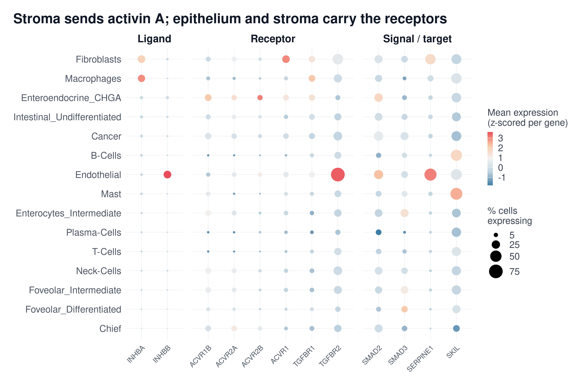
Ligand, receptor and SMAD-target expression across tumour cell types. ACVR1B, the type I activin receptor, tracks the epithelial lineages — 13.8% of malignant cells carry it versus 0.9% of T cells. Fibroblasts carry ACVR1 (20.1%) and TGFBR2 (42.8%) and show high SERPINE1 (40.8%), a direct SMAD2/3 target that reads out active rather than merely potential signalling. This is the map any intervention would act on.
What already exists against this pathway
| Agent | Modality | Status | Indication |
|---|---|---|---|
| Garetosmab | Anti-activin A monoclonal antibody | Under FDA review | Fibrodysplasia ossificans progressiva |
| Sotatercept (Winrevair) | ActRIIA-Fc ligand trap | APPROVED | Pulmonary arterial hypertension |
| Luspatercept (Reblozyl) | Modified ActRIIB-Fc trap | APPROVED | Anaemia in MDS / β-thalassaemia |
| ALK4 / ACVR1B kinase inhibitors | Small molecule (SB-431542, vactosertib, galunisertib) | Investigational | Various — generally cross-reactive with ALK5/TGF-βR1 |
| Follistatin, FSTL3 | Endogenous antagonists | — | Already engaged in these tumours — see below |
Neither approved agent was developed for cancer, and neither is used in gastric cancer. What they establish is that this pathway can be blocked in people and tolerated — pathway drugability, not efficacy in this disease.
Why the target is attractive
- The evidence converges. Bulk differential expression, independent-cohort replication, a survival association, pathway co-expression and single-cell cell-of-origin all point the same way.
- The mechanism is specific and falsifiable. "CAFs secrete activin A, malignant epithelium carries ACVR1B" is a concrete paracrine claim, testable by co-culture, conditioned medium or receptor knockdown.
- The subunit is committed. INHA is near-absent (~0.12% of cells), so the βA subunit has nowhere to go but activin A — the signal is not diluted across inhibin.
- The target is extracellular. A secreted ligand needs no cell penetration, which is precisely why the antibody and trap route worked clinically.
Four reasons to be careful
- The survival association is probably confounded with stromal content. Stroma-rich tumours do worse across many cancers. Since INHBA is a CAF marker here, log-rank p = 0.023 may be reporting how much stroma a tumour has rather than any dependency on activin A. This is the weakest link in the chain, and a Cox model adjusted for purity would settle it. It has not been run.
- The pathway has a bypass. Endothelium expresses INHBB (20.8%), supplying activin B through the same ALK4/SMAD2/3 route. Blocking activin A alone may simply be routed around.
- The tumour is already braking it. Among INHBA-positive CAFs, 46% co-express FSTL3 and 20% FST — endogenous antagonists, and FSTL3 is itself a SMAD2/3 target. Free rather than total activin A is the quantity that matters, and it has not been measured.
- Systemic blockade is not free. Activin A is broadly physiological — erythropoiesis, reproduction, inflammation, bone. Both approved traps carry haematologic effects.
The defensible claim here is a mechanism, not a medicine. INHBA marks a CAF-derived, activin A–driven stromal phenotype in gastric cancer, and single-cell resolution explains a bulk observation that looked paradoxical. That is the contribution. This work did not identify, design or propose a drug.
If there is a therapeutic angle, the honest version is a stratification hypothesis: the pathway is already clinically validated in other diseases by agents that exist, and the open question is whether a CAF-high, INHBA-high gastric subgroup would be the right population in which to test one. That is a question about patient selection, not a discovery claim.
Scope. Every result on this page is observational. INHBA is associated with these phenotypes; nothing here shows it drives them. No docking, screening or compound design was performed in this project, and no agent named above has been studied in gastric cancer. Drug statuses are current as of writing and should be re-checked against the FDA label before being relied on.
Target Structure — Activin A in 3D
INHBA encodes the inhibin βA subunit; two βA chains disulfide-bond into activin A, the secreted ligand the fibroblast analysis above points to. Both structures shown here are X-ray crystal structures of mature activin A bound to a small molecule — these are experimental poses, not docking predictions.
Drag to rotate · Scroll to zoom · Right-drag to pan · Esc or double-click exits 3D mode
| PDB | Ligand | Compound | Formula | MW | Resolution |
|---|---|---|---|---|---|
| 6Y6N | ODQ | (3R)-3,4-dimethyl-3-propyl-1H-1,4-benzodiazepine-2,5-dione | C₁₄H₁₈N₂O₂ | 246.31 | 2.03 Å |
| 6Y6O | OCK | (3R)-4-ethyl-3-methyl-3-propyl-1H-1,4-benzodiazepine-2,5-dione | C₁₅H₂₀N₂O₂ | 260.33 | 2.04 Å |
The two ligands differ by a single atom — an N-methyl in ODQ becomes an N-ethyl in OCK — so switching structures above isolates what one methylene does to the binding mode. Both are benzodiazepine-2,5-diones under 261 Da, i.e. fragment-scale chemical matter rather than optimised leads.
Activin A is a hard small-molecule target and the public chemistry is thin. It is a secreted cytokine that works by protein–protein interaction, with no enzyme active site to occupy. ChEMBL lists only three compounds with recorded activity against the human inhibin βA chain. Every agent that has reached the clinic is a biologic instead: garetosmab, an anti-activin A monoclonal antibody for fibrodysplasia ossificans progressiva, and sotatercept (Winrevair), an ActRIIA-Fc ligand trap approved for pulmonary arterial hypertension. The fragments above are, in effect, the state of the public art for binding activin A directly.
Note. Coordinates stream live from RCSB, so the viewer needs a network connection and reflects whatever the PDB currently serves. A crystallographic pose shows that a compound binds and where — it is not evidence of potency, selectivity, or cellular activity, none of which are established for these fragments. Related activin A complexes in the same series: 8QCF, 9N6V, 9N6W, 9N6X, 9N74, 9N75, 9N6Y.